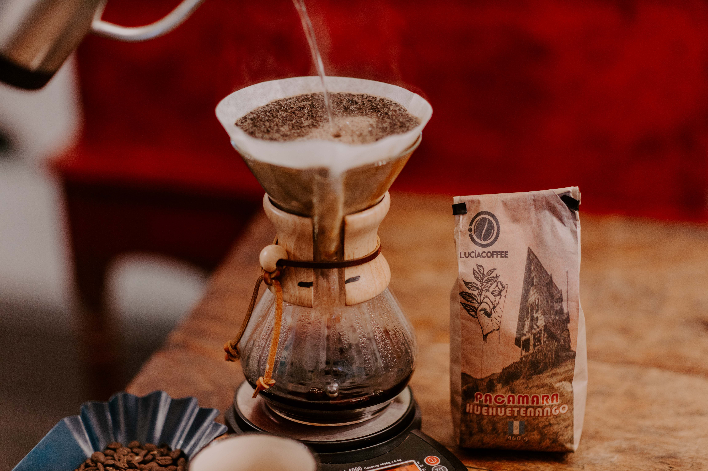
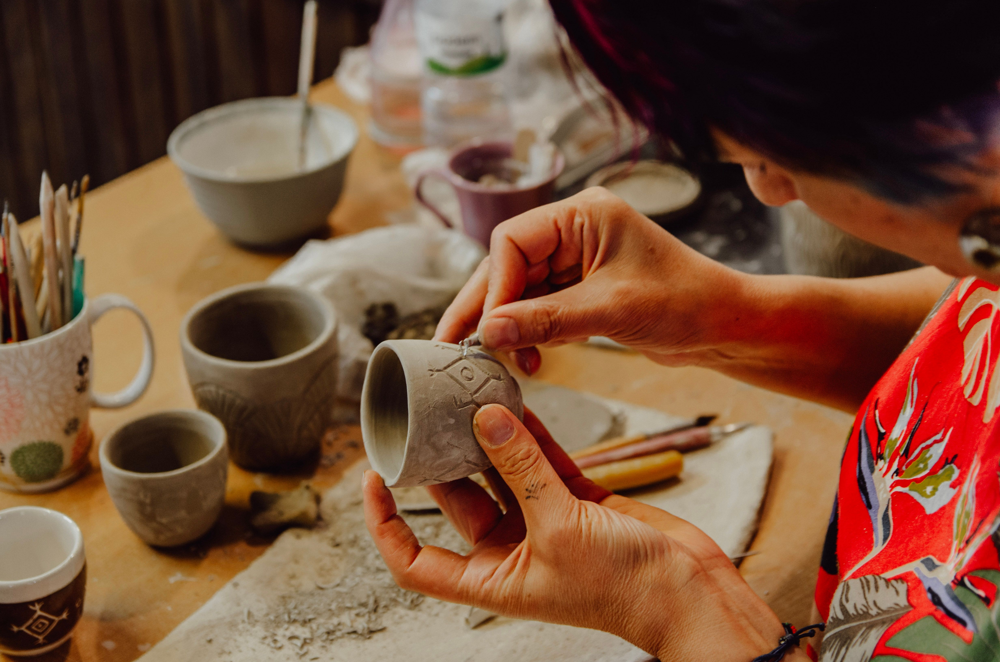
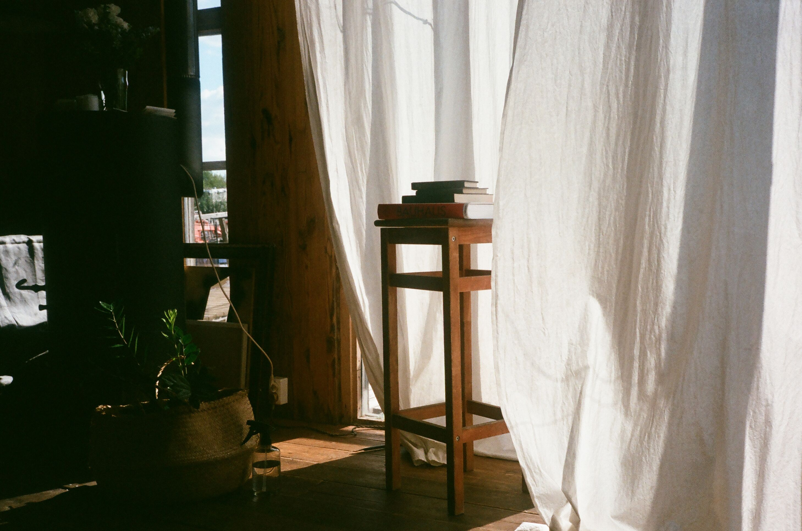
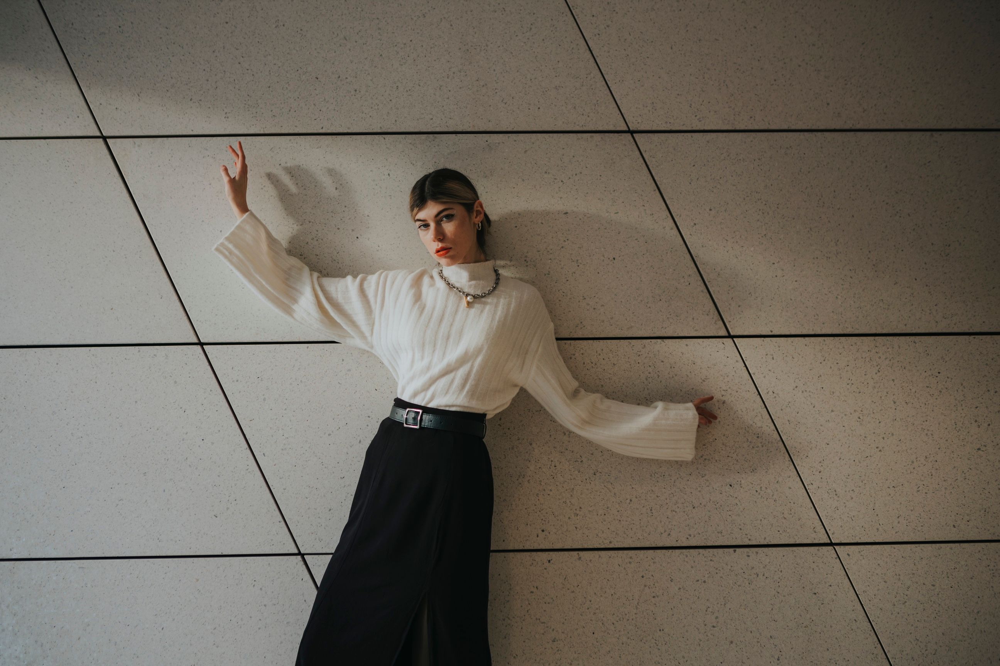
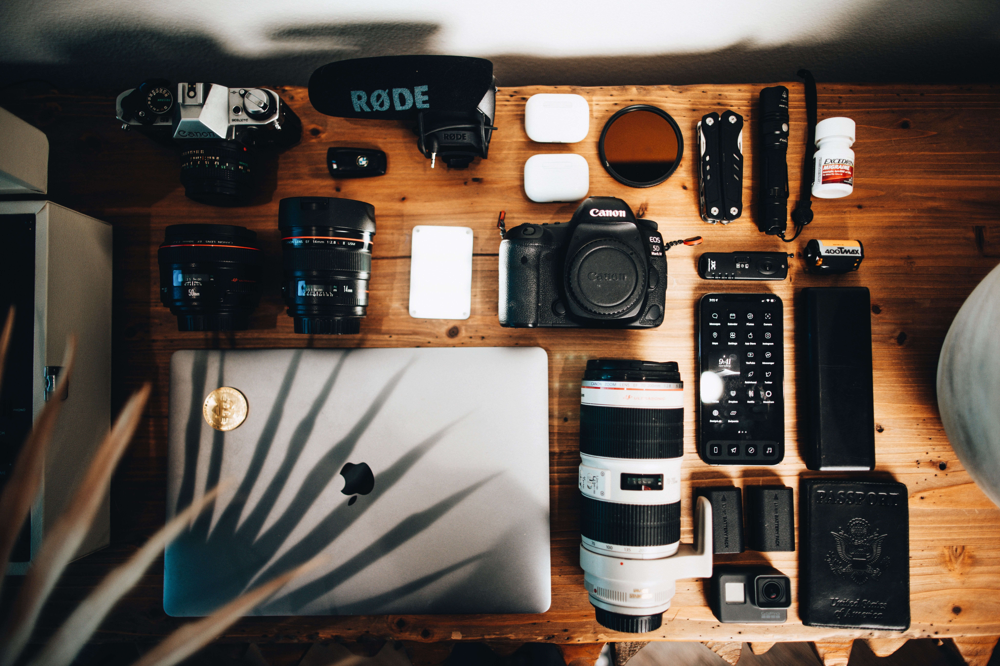

Foto & VisualKopi Senja Roastery
Pemotretan kemasan dan penataan visual produk kopi spesialti dengan pencahayaan hangat yang bersih.
Kurasi 15 proyek fotografi komersial, sampel video, katalog produk, dan antarmuka web dengan pendekatan visual yang tenang dan terstruktur.

Foto & VisualPemotretan kemasan dan penataan visual produk kopi spesialti dengan pencahayaan hangat yang bersih.

Foto & VisualFoto detail peralatan keramik buatan tangan dengan tekstur tanah dan pencahayaan lembut.

Foto & VisualPemotretan tekstil dan elemen ruang dengan palet hangat serta cahaya alami jendela.

Foto & VisualSeri potret editorial dengan komposisi minimalis dan palet warna netral untuk kampanye musiman.
 Foto & Visual
Foto & Visual
Dokumentasi lanskap dan cerita visual perjalanan bernuansa Nordik untuk publikasi digital.
Cuplikan sampel video profil yang memperlihatkan ritme kerja harian dan suasana ruang studio.
Contoh video proses pembuatan dan momen di balik layar untuk membangun kedekatan cerita merek.
Sampel klip penyeduhan minuman hangat dengan tempo tenang untuk memperkuat suasana produk.
Cuplikan persiapan lampu dan kamera di studio sebelum sesi pengambilan gambar dimulai.
Sampel video perjalanan singkat dengan nuansa alam terbuka untuk konten cerita dan kampanye.
 Katalog & Web
Katalog & Web
Dokumentasi fasad bangunan modern serta perancangan struktur halaman profil institusi berbasis web responsif.

Katalog & WebPenyusunan foto katalog aksesoris dan perlengkapan meja kerja untuk tampilan etalase digital yang seragam.
 Katalog & Web
Katalog & Web
Penataan konsep visual, catatan sketsa, dan struktur informasi layanan yang mudah dipahami klien.
 Katalog & Web
Katalog & Web
Penyelarasan ritme halaman editorial dan grid katalog web agar nyaman dibaca di berbagai ukuran layar.
 Katalog & Web
Katalog & Web
Integrasi navigasi 7 halaman dengan penanda halaman aktif dan formulir konsultasi yang tersinkronisasi.
Pesan layanan satuan di halaman Layanan atau pilih paket bundling di halaman Paket sesuai kebutuhan proyek Anda.